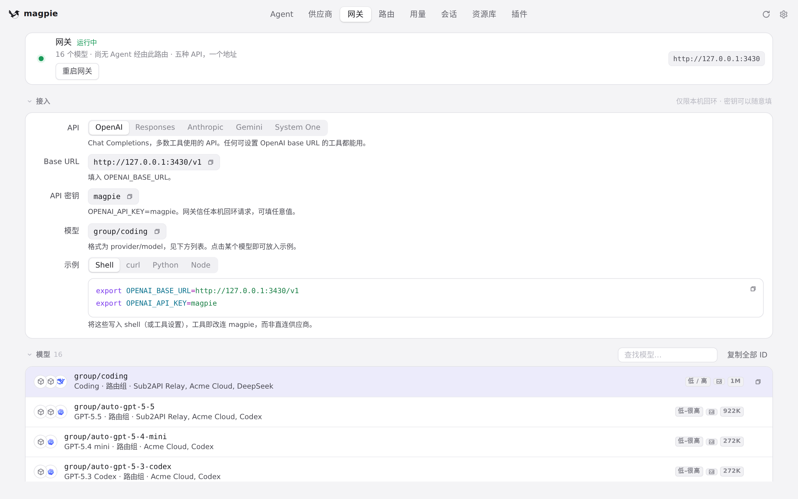
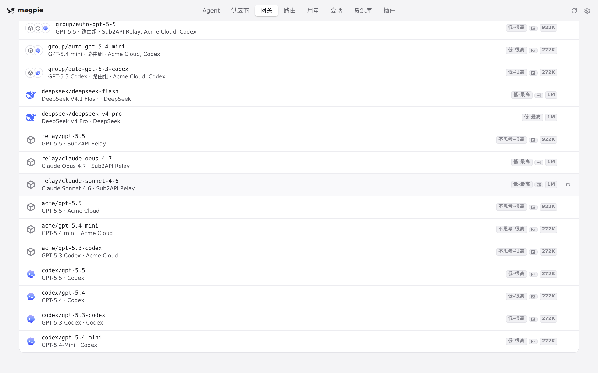

#1213 界面预览
commit 7fbd1b3 · 回到 PR · 改动只在 app.js 的「读者在哪里」机制里：在页面的滚动条带上按下鼠标开始拖动时，把拖动期间的每次 scroll 都当作读者发起的（并放开此前点击留下的 held、在松手后再续 250ms），让页面跟着滑块走而不是被拉回；代码自己写 scrollTop 造成的滚动仍会被拉回。
红线是鼠标走过的轨迹，红色圆环是一次点击；底部文字是这一步在做什么。空格暂停，← → 逐段查看。

网关页：内容高于窗口、右侧有滚动条 · 网关页：模型列表比窗口高，右侧是页面自己的滚动条

网关页：内容高于窗口、右侧有滚动条 · 滚动之后网关页停的位置